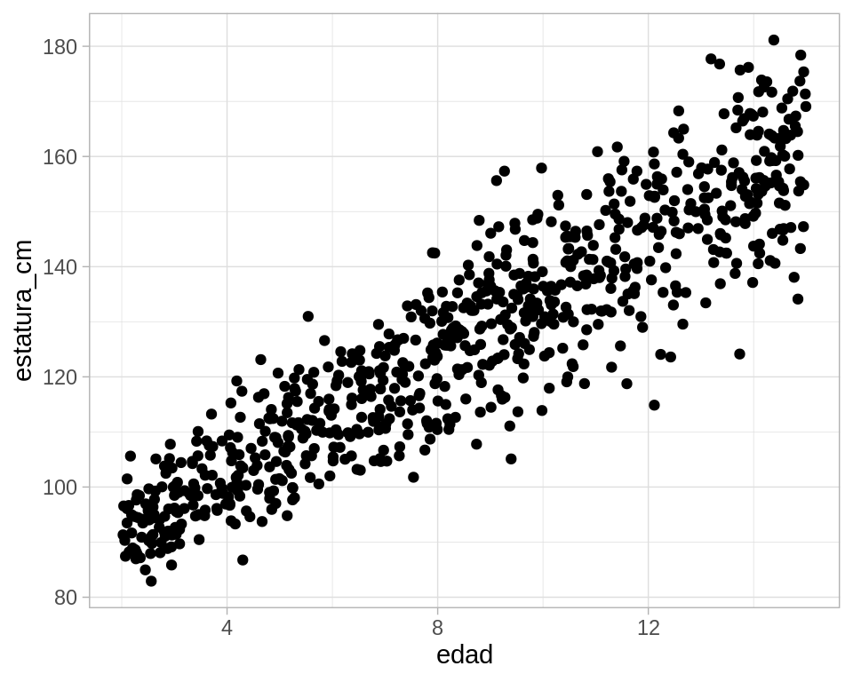
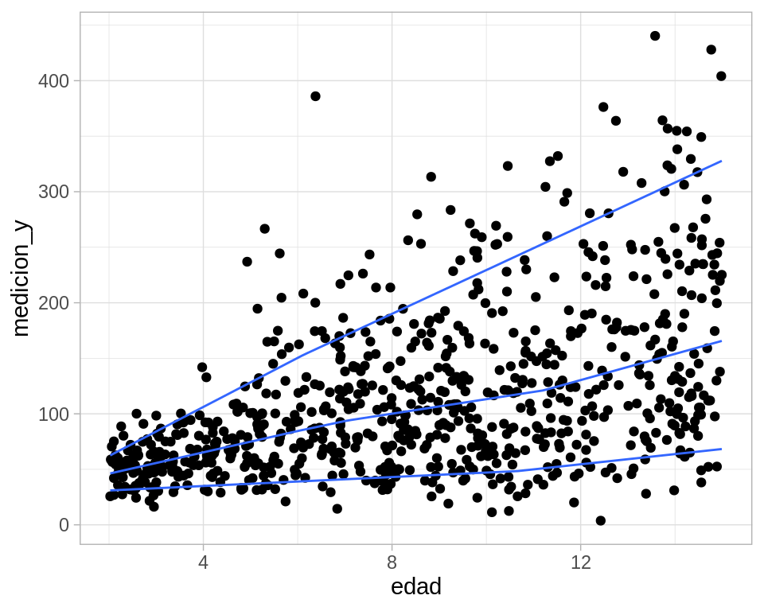
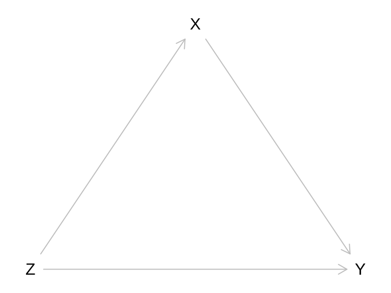

11Modelos probabilísticos para variables continuas
En la parte anterior consideramos un númeroo fijo de resultados numéricos de experimentos aleatorios, por ejemplo, cuando \(X\) el resultado de una tirada de dado. En este caso, un modelo de probabilidad para \(X\) asigna una probabilidad dada a cada posible resultado, por ejemplo
\[P(X=1) = 1/6\]
e igualmente \(P(X=2)=\cdots = P(X=6) = 1/6\). En muchos casos, la cantidad \(X\) que nos interesa puede tomar valores numéricos arbitrarios, y en este esquema no está claro cómo asignaríamos probabilidades.
11.0.1 Ejemplo: ruleta justa
Supongamos que giramos una ruleta con una flecha indicadora, y el resultado del experimento es el ángulo en grados final de la flecha. ¿Cómo podríamos poner, por ejemplo \(P(X= 92.7)\)? ¿Qué pasa si podemos medir con resultados con varios decimales de exactitud?
Ruleta
En estos casos, en lugar de considerar eventos de la forma \(X=a\), podemos considerar eventos resultantes de la forma \(a\leq X \leq b\), es decir, buscamos asignar probabilidades a eventos de la forma
\[P(X \in [a,b]).\]
Por ejemplo, si \(Y\) es la estatura adulta de una persona que acaba de nacer, podríamos preguntarnos cómo asignar probabilidades a eventos como
\[P(Y\in [150,170]) = P(150\leq Y \leq 170),\]
y quizá también otros como
\[P(Y < 180).\]
11.1 Modelo equiprobable o uniforme
Los modelos más simple para una medición continua \(X\) son los modelos uniforme.
Para nuestra ruleta, por ejemplo, \(X\) puede tomar valores en el intervalo \([0, 360)\). Si la ruleta es justa, entonces la probabilidad de que la flecha caiga en cualquier sector \([a,b]\) debe ser igual. Una manera de lograr esto usar como probabilidad la proporción de la longitud de \([a,b]\) con respecto al total de \([0, 360)\):
\(P(X\in [a,b]) = \frac{b-a}{360}.\)
Discute por qué esta asignación de probabilidades satisface las tres reglas básicas de probabilidad (axiomas) que presentamos anteriormente.
Este es el equivalente continuos para espacios equiprobables con un número finito de resultados.
::: {.cell type=‘comentario’}
Supongamos que una variable aleatoria puede tomar valores en el intervalo \([L,U]\). La variable aleatoria es uniforme en \([L,U]\) cuando
\[P(X \in [a,b]) = \frac{b-a}{L-U}\]
</div>\EndKnitrBlock{comentario}
:::
11.1.1 Ejemplo: ruleta sesgada
Ahora supongamos que nuestra ruleta no está del todo balanceada. Por ejemplo, podría ser estuviera colgada en una pared, y al girar la flecha es un poco más probable que la flecha apunte hacia el piso en lugar de hacia el cielo.
En este caso, si la dirección hacia arriba es 90 grados y hacia abajo es 270 grados, quisiéramos por ejemplo que
\[P(260 < X <280) < P(80 < X < 100)\]
Y nótese que debe ser posible asignar probabilidades a cualquier sector de la ruleta con el nuevo modelo que propongamos. ¿Cómo podríamos modificar nuestra asignación de probabilidades?
Una de las maneras más fáciles es pensando que nuestra probabilidad se obtiene integrando una funcion constante:
Si \([a,b]\) es un sector de la ruleta con \(a<b\), podríamos poner
De forma que si \(f(x)= 1/360\) para valores \(0 \leq x < 360\), nuestra probabilidad se escribe como la integral
\[P(X\in [a,b]) = \int_a^b f(x) \,dx \]
En este caso, probabilidad es área bajo la curva \(f(x)=1/360\) que se calcula integrando sobre el intervalo de interés
Para generalizar la idea es la siguiente:
Usamos la fórmula anterior, pero modificamos o perturbamos la función \(f(x) = 1/360\) para que \(f\) sea un poco más alta alrededor de 270 grados (abajo), y un poco más baja alrededor de 90 grados (arriba).
Lo único que necesitamos es que \(f(x)\) no puede tomar valores negativos (por que si no obtendríamos probabilidades negativas en algunos sectores), y la integral sobre la ruleta completa debe ser uno:
\[P(X\in [0, 360]) = \int_0^{360} f(x)\,dx = 1\]
Podríamos utilizar por ejemplo:
Código
f_dens <-function(x){ x_rad <-2* pi * x /360 (1/360) +0.0002*cos(x_rad -3* pi /2)}graf_1_tbl <-tibble(angulo =seq(0, 360, 1), tipo ="uniforme",f =1/360) graf_2_tbl <-tibble(angulo =seq(0, 360, 1), tipo ="colgada") %>%mutate(f =f_dens(angulo))graf_tbl <-bind_rows(graf_1_tbl, graf_2_tbl)ggplot(graf_tbl, aes(x = angulo, y = f, colour = tipo)) +geom_line() +ylim(c(0, 0.003)) +facet_wrap(~tipo, nrow =1)
El cálculo se hace ahora con área bajo la curva. Para calcular la probabilidad
\[P(X\in [50, 130]),\]
integramos la función \(f\) correspondiente, que corresponde a calcular área bajo la curva:
Y ahora vemos que para la versión perturbada, más de la probabilidad se concentra alrededor de 270 grados que alrededor de 90. Por las propiedades de la integral, todas las propiedades usuales de probabilidad se cumplen.
11.2 Funciones de densidad
Cuando trabajamos con mediciones de tipo continuo, es más conveniente definir asignaciones de probabilidad utilizando funciones de densidad de probabilidad:
Una función \(f(x)\) no negativa cuya integral es igual a 1 es una función de densidad de probabilidad. Las probabilidades asociadas se calculan integrando:
\[P(X\in [a,b]) = \int_a^b f(x)\,dx\]
En este caso decimos que \(f\) es la función de densidad de probabilidad asociada a la variable aleatoria \(X\). A este tipo de variables aleatorias les llamamos continuas.
11.3 Ejemplo: densidad triangular
Supongamos que tenemos una variable aleatoria que tiene mediana 2, y puede tomar valores entre 0 y 4. Podríamos definir una densidad como sigue: Si \(x\) está entre 0 y 2, entonces
Supongamos que una variable \(X\) tiene mediana 2 y rango de 0 a 4, con densidad triangular. ¿Cuál es la probabilidad \(P(X>1)\)?
Solución: Por reglas usuales de probabilidad, \(P(X>1) = P(1<X<2) + P(X\geq2)\). Tenemos que \(P(X\geq 2) = 0.5\). Ahora usamos la fórmula de la densidad triangular para obtener
En general, podemos dar una fórmula para una densidad triangular en el intervalo \([A,B]\) con mediana en \((A + B)/2\). ¿Cómo sería la fórmula?
11.4 Cuantiles de variables aleatorias
Antes vimos la definición de cuantiles para datos numéricos. Podemos definirlos también para variables aleatorias numéricas:
::: {.cell type=‘comentario’}
Sea \(p\in (0,1)\). El cuantil-\(p\) de la variable \(X\) con función de densidad \(f(x)\) es el valor \(x(p)\) tal que
\[\int_{-\infty}^{x(p)} f(x)\,dx = p\]
</div>\EndKnitrBlock{comentario}
:::
Observación: nótese que usamos como límite inferior \(-\infty\) para indicar que integramos \(f\) sobre toda la densidad que esté a la izquierda de \(x(p)\).
Ejemplo: densidad triangular
Supongamos que \(X\) tiene la densidad triangular mostrada arriba. Calcula el cuartil inferior y superior (es decir, los cuantiles 0.25 y 0.75). Para el cuartil superior, por ejemplo, buscamos al \(x(0.75)\) de la siguiente gráfica:
Código
source("R/triangular.R")ggplot(triangular_tbl, aes(x = x, y = f)) +geom_line() +geom_area(aes(x =ifelse(x >0& x <qtri(0.75, 0, 4), x, 0)), fill="salmon", alpha =0.5) +ylim(c(0, 0.7)) +annotate("text", x =qtri(0.75, 0, 4), y =0.03, label ="x(0.75)") +annotate("point", x =qtri(0.75, 0, 4), y =0.0)
Comenzaremos por el cuartil inferior. Buscamos una \(x(0.25)\) tal que
\[\int_0^{x(0.25)} f(x)\,dx = 0.25\]
Sabemos que \(x(0.25)< 2\), pues la integral hasta 2 es 0.5, así que
Ahora podríamos calcular la otra integral, pero por simetría podemos concluir que
\[x(0.75) = 2 + (2 - 1.4142) \approx 2.5858\]
y concluimos que los cuartiles inferiores y superiores son aproximadamente 1.41 y 2.59
Ejercicio: densidad uniforme
Calcula la mediana, y los percentiles 0.10 y 0.90 de una variable uniforme en \([0, 10]\).
11.5 Comparando cuantiles teóricos y empíricos
Los cuantiles que vimos en la parte de descriptivos para datos numéricos se llaman usualmente cuantiles empíricos. Estos cuantiles podemos compararlos con cuantiles teóricos para ver qué tan similares son, y si el modelo teórico describe adecuadamente los datos.
11.5.1 Ejemplo: distribución uniforme
Simularemos 500 datos uniformes en \([0, 10]\):
Código
x_sim_u <-runif(500, 0, 10)
Podríamos calcular algunos cuantiles empíricos:
Código
quantile(x_sim_u, c(0.10, 0.50, 0.90))
10% 50% 90%
0.7668217 5.0462481 8.9021597
Por el ejercicio anterior sabemos cuáles son los cuantiles teóricos correspondientes a una uniforme en \([0,10]\). Podemos calcularlos también como sigue:
Código
qunif(c(0.10, 0.5, 0.90), 0, 10)
[1] 1 5 9
Y vemos que son muy similares los cuantiles empíricos y teóricos. Una mejor manera de considerar esta similitud es graficando todos los cuantiles empíricos y comparándolos con los teóricos:
Y vemos que la forma de las dos distribuciones es muy similar: los cuantiles empíricos son muy similares a los teóricos. Existen algunas fluctuaciones debidas al muestreo aleatorio.
11.5.2 Ejemplo: distribución triangular
Repetimos para la distribución triangular. Los cuantiles que calculamos arriba son:
Nótese que otra vez, los cuantiles teóricos se alinean bien con los teóricos.
11.6 La distribución normal
La distribución normal es una que aparece naturalmente en al teoría de probabilidad.
11.6.1 Promedio de variables
Consideremos que tiramos 40 dados justos de 6 lados, y consideramos su promedio \(\bar{X}\) como resultado de nuestro experimento aleatorio. ¿Cómo se ve la distribución de probabilidades de esta variable \(\bar{X}\)?
Comenzamos haciendo simulacion:
Código
simular_bolsa <-function(num_dados =40){ dados <-sample(1:6, num_dados, replace =TRUE) media <-mean(dados) media}simular_bolsa()
[1] 3.6
Veamos cómo se ven los resultados si hacemos este experimento un número grande de veces:
Y notamos una forma de “campana” interesante. Esto se explica porque típicamente tendremos tiros bajos y altos, de modo que muchos resultados de este experimento se concentran alrededor de la media de un dado (3.5). Además, existen fluctuaciones aleatorios, y a veces tenemos un poco más de tiros altos o de tiros bajos, de forma que existe dispersión alrededor de 3.5.
Sin embargo, estas desviaciones de 3.5 no pueden ser muy grandes: por ejemplo, para tener un promedio de 1, todas las tiradas de los 40 dados tendrían que dar 1, y eso es muy poco probable. Igualmente, para que el promedio fuera cercano a 6, la gran mayoría de los 40 dados deberían de dar 6, lo cual otra vez es muy poco probable. Esto explica al menos la forma general de la forma de las colas derecha e izquierda de esta distribución.
Los dados podrían ser diferentes (por ejemplo, un poco cargados a 1 o 6, o más cargados a valores centrales), y los argumentos de arriba también se cumplirían. Lo que es sorprendente es que, independientemente de cómo sean las particularidades de los dados, la forma analítica de esta distribución que acabamos de mostrar es la misma.
Esta forma está descrita por la densidad normal estándar:
Y notamos que los cuantiles no corresponden, pero el espaciamiento entre los cuantiles de los datos y los teóricos de la normal estándar es el mismo. Quiere decir que estas dos distribuciones tienen la misma forma, aunque estén escaladas y centradas en distintos valores.
Probemos con promedios de 20 observaciones triangulares en \((0,1)\) por ejemplo. El resultado es el mismo:
Las probabilidades asociadas a una normal estándar se calculan integrando esta curva (que tiene que hacerse de forma numérica). Por ejemplo, para calcular
Esta es la forma de la densidad estándar. Podemos centrar esta campana en otro valor \(\mu\) y aumentar la dispersión por un factor \(\sigma\). Si \(Z\) es una variable normal estándar, la variable
\[X = \mu + \sigma Z\]
es una variable normal con parámetros \((\mu, \sigma)\), o de manera más compacta, decimos que \(X\) es \(N(\mu, \sigma)\). La distribución normal estándar es \(N(0,1)\).
Por ejemplo, si escogemos \(\mu=5\) y \(\sigma = 0.5\), obtenemos:
La distribución normal estándar \(N(0,1)\) tiene media 0 y desviación estándar 1
La distribución normal \(N(\mu,\sigma)\) tiene media \(\mu\) y desviación estándar \(\sigma\)
11.8 Cuantiles y concentración de la densidad normal
Con un poco de cálculo podemos ver qué tan fuertemente se concentra la densidad alrededor de la media para una distribución normal. La regla es la siguiente:
68% de la densidad se concentra en el intervalo \([\mu-\sigma, \mu+\sigma]\)
95% de la densidad se concentra en el intervalo \([\mu-2\sigma, \mu+2\sigma]\)
99.7% de la densidad se concentra en el intervalo \([\mu-3\sigma, \mu+3\sigma]\)
Código
grafica_concentracion <-function(mu, sigma, z){ x <-seq(mu -3.1* sigma, mu +3.1* sigma, 0.01) valor <-dnorm(x, mu, sigma) datos <-tibble(x = x, `f(x)`=valor) texto <-round(100*(pnorm(z) -pnorm(-z)), 1) texto <-paste0(texto, "%")ggplot(datos, aes(x = x, y =`f(x)`)) +geom_area(data =filter(datos, x < mu + z*sigma, x > mu - z*sigma), fill ="salmon") +geom_line() +annotate("text", x = mu, y =0.1, label = texto) +scale_x_continuous(breaks = mu + sigma*seq(-3, 3, 1)) +theme_minimal() +ylab("") }g_68 <-grafica_concentracion(10, 2, 1)g_95 <-grafica_concentracion(10, 2, 2)g_997 <-grafica_concentracion(10, 2, 3)paneles <- g_68 + g_95 + g_997paneles +plot_annotation(title ="Concentración alrededor de la media (normal)")
Nota: esto aplica para cualquier densidad normal, independientemente de los parámetros.
Obsérvese que esto nos da una interpretación natural de la desviación estándar de una distribución normal en términos de percentiles de los datos, y la manera usual con la que entendemos la desviación estándar de la distribución normal.
11.9 El teorema central del límite
Una de las razones por las que el modelo normal es tan importante es el siguiente resultado:
::: {.cell type=‘comentario’}
Teorema central del límite
Si \(X_1,X_2,\ldots, X_n\) son variables aleatorias independientes con media \(\mu\) y desviación estándar \(\sigma\) con una densidad \(f(x)\):
\(S_n = X_1 + X_2 + \cdots X_n\) es aproximadamente normal cuando \(n\) es suficientemente grande
:::
Muchas cantidades de interés en la estadística se pueden definir como sumas o promedios de un número grande de variables aleatorias (por ejempo, cuando queremos estimar el total de ingreso de los hogares, estatura promedio en una población, etc.) Los percentiles de una muestra grande también cumplen un teorema central del límite de este tipo.
La aproximación del teorema central del límite mejora cuando \(n\) es más grande. Aunque una regla de dedo dice que \(n\geq 30\) es suficiente para muchas distribuciones, puede ser que sea necesaria usar una \(n\) más grande.
Esto nos permite, por ejemplo, considerar nuestro primera técnica de estimación por intervalos:
Observamos una muestra grande \(x_1,\ldots, x_n\) de datos de una población (no necesariamente con distribución normal). Supongamos que buscamos estimar la media \(\mu\) de la población con un intervalo.
Por otras razones técnicas, a veces se usa \(s^2 = \frac{1}{n-1}\sum_i (x_i-\bar{x})^2\) en lugar de \(\hat{\sigma}^2\). Si la muestra es grande esto no es importante.
Estos intervalos tienen cobertura nominal de 95%, sin embargo, puede variar dependiendo del tamaño de muestra y la forma de la distribución teórica (poblacional). Existen métodos como el bootstrap donde podemos checar qué tan razonable es hacer esta aproximación. También se puede hacer simulación modelando la distribución \(f(x)\).
11.10 Otras densidades comunes
Como vimos arriba, consideraciones teóricas hacen razonable suponer que una variable aleatoria tiene cierta distribución: por ejemplo, si una variable aleatoria es suma de muchas perturbaciones independientes, la suma o promedio resultante puede modelarse como una distribución normal.
Otras consideraciones teóricas sugieren otro tipo formas útiles de densidades.
11.11 Modelos conjuntos de probabilidad (opcional)
Usualmente no nos interesa una sola variable aleatoria, sino varias. Nos interesa entender cómo están relacionadas o cómo depende una de otra.
Por ejemplo, ¿cuál es la mediana de peso para un infante de 2 meses, y qué tan diferente es de la mediana de peso para un infante de 5 meses? ¿qué relación hay entre temperatura y presión atmosférica? ¿qué relación hay entre creencias religiosas y afiliación política? En todos estos casos quisiéramos describir de distintas formas cómo ser relaciona una cantidad aleatoria con otra.
Al principio de este curso, vimos algunas técnicas descriptivas para mostrar y explorar estas relaciones. Por ejemplo:
¿Cómo cambian las preferencias de forma de tomar té dependiendo del tipo de té una persona acostumbra tomar? ¿Qué tan probable es que alguien que toma té negro use azúcar vs alguien que toma té verde? (relación entre dos variables categóricas o discretas)
¿Cómo cambian los precios medios de las casas dependiendo del vecindario donde se ubican? (describir la dependencia de una variable numérica si sabemos el valor de una variable categórica)
¿Cómo cambia la mediana y los cuartiles de peso de un infante dependiendo de los meses desde que nació (describir cómo depende una variable numérica de otra variable numérica)
En esta parte veremos una introducción cómo se formalizan estos conceptos en modelos probabilísticos.
11.12 Estaturas: modelando relaciones de dependencia
Supongamos que \(X\) es la edad de una persona entre 4 y 15 años. y \(Y\) es su estatura. La relación entre \(X\) y \(Y\) no es determinística, pues existe variación en el crecimiento para las personas por distintas razones. Por esta razón, no tiene mucho sentido dar una relación como \(Y = 80 + 5.5 X\), por ejemplo, pues esta relación no se cumple para prácticamente ninguna persona.
Tiene más sentido, sin embargo, decir cómo es la distribución condicional de \(Y\) dado que conocemos \(X\). Por ejemplo, podríamos hacer la hipótesis de que la mediana de estatura para una persona de edad \(X\) está dada por
\[med(Y|X) = 80 + 5.5 X\]
Nótese que escribimos la mediana condicional de \(Y\) dado que conocemos el valor de \(X\). También podríamos escribir la media condicional de \(Y\) dada \(X\) como
\[E(Y|X) = 80 + 5.5 X\]
Y estas dos cantidades tienen sentido.
Estas cantidades claramente no determinan la variabilidad que hay de la estatura cuando conocemos \(X\). Podríamos entonces también especificar por ejemplo la desviación estándar condicional:
\[\sigma(Y|X) = 3\sqrt{X} \]
Generalmente estas relaciones se estiman empíricamente con datos observados, pero para este ejemplo utilizaremos estos modelos fijos.
Simulamos algunos datos con estas propiedades:
Código
edades <-runif(800, 2, 15) # edad distribuida uniforme, o grupos de edad del mismo tamañodatos_tbl <-tibble(edad = edades) %>%mutate(media =80+5.5*edad, desv_est =3*sqrt(edad)) %>%# para este ejemplo, simulamos con la distribución normal.mutate(estatura_cm =rnorm(n(), mean = media, sd = desv_est))ggplot(datos_tbl, aes(x = edad, y = estatura_cm)) +geom_point()

Obsérvese cómo en efecto la estatura esperada aumenta con la edad (condicional a la edad), y que la dispersión de estatura aumenta conforme la edad aumenta.
Nótese que si usamos un suavizador, podemos estimar la media condicional de nuestro modelo, que en este caso está cercana a la fórmula que establecimos en nuestro modelo:
Código
ggplot(datos_tbl, aes(x = edad, y = estatura_cm)) +geom_point() +geom_smooth(se =FALSE)
`geom_smooth()` using method = 'loess' and formula 'y ~ x'
Podemos estimar cuantiles también como vimos en secciones anteriores:
Smoothing formula not specified. Using: y ~ qss(x, lambda = 20)
Y observamos igualmente que la dispersión para el grupo de 15 años es cercana al doble que la dispersión para el grupo de 4 años.
11.13 Distribuciones condicionales
Todo el trabajo de arriba de modelación teórica consiste entonces en definir distribuciones condicionales. En el ejemplo anterior,
Dimos una distribución para \(X\), que en este caso la tomamos uniforme en [4, 15], pues suponemos que esta es la estructura de nuestra población (hay el aproximadamente el mismo número de personas de cada edad)
Dimos una distribución para \(Y\)condicionada a \(X\). En este caso, establecimos que \(Y|X\) es normal con media \(80 + 5.5X\) y desviación estándar \(3 * sqrt(X)\).
Estas dos partes dan un modelo conjunto para \(X\) y \(Y\): sabemos que está completamente determinado pues pudimos simular del modelo. Otra manera de entender esto es que cualquier probabilidad que involucra a \(X\) y \(Y\) puede ser calculada con la regla del producto. Aunque no entraremos en detalles, la densidad conjunta de \(X\) y \(Y\) puede definirse en este caso como
\[f(x,y) = f_X(x)f_{Y|X}(y|x)\]
Sabemos que \(f_X(x) = 1/(15- 3)\) para \(x\) entre 4 y 15 años, y la forma de \(f_{Y|X}(y|x)\) sabemos que es normal con media y varianza conocida (en términos de x). Esta conjunta puede ser integrada sobre cualquier región (al menos en teoría) para calcular la probabilidad de interés
11.14 Estaturas: variación gamma
Podemos juntar estos bloques de densidades condicionales para construir otro tipo de modelos. Por ejemplo, supondremos que la estatura dada la edad es una distribución gamma \((k,\lambda)\) y la misma media y desviación estándar que vimos arriba. Como la media de una gamma de este tipo es \(\mu = k/\lambda\) y su desviación estándar es \(\sigma = \sqrt{k}/\lambda\), podemos despejar \(k\) y \(lambda\) y hacer:
Código
datos_tbl <-tibble(edad = edades) %>%mutate(media =80+5.5*edad, desv_est =3*sqrt(edad)) %>%mutate(k = (media/desv_est)^2, lambda = media / desv_est^2) %>%# para este ejemplo, simulamos con la distribución normal.mutate(estatura_cm =rgamma(n(), shape = k, rate = lambda))ggplot(datos_tbl, aes(x = edad, y = estatura_cm)) +geom_point() +geom_quantile(method ="rqss", lambda =10, quantiles =c(0.10, 0.5, 0.9))
Smoothing formula not specified. Using: y ~ qss(x, lambda = 10)
Este modelo es muy similar al normal. Sin embargo, podríamos intentar otras variaciones si cambiamos la magnitud de la desviación estándar en relación a la media, por ejemplo:
Código
datos_tbl <-tibble(edad = edades) %>%mutate(media =30+10*edad, desv_est =7* (edad)) %>%mutate(k = (media/desv_est)^2, lambda = media / desv_est^2) %>%# para este ejemplo, simulamos con la distribución normal.mutate(medicion_y =rgamma(n(), shape = k, rate = lambda))ggplot(datos_tbl, aes(x = edad, y = medicion_y)) +geom_point() +geom_quantile(method ="rqss", lambda =10, quantiles =c(0.10, 0.5, 0.9))
Smoothing formula not specified. Using: y ~ qss(x, lambda = 10)

Este caso claramente no serviría para modelar estaturas, pero podemos ver cómo introdujimos asimetría considerable en las distribuciones condicionales de y dado x una vez que especificamos la media y la varianza condicionales.
11.15 Modelos conjuntos para factor categórico
Supongamos ahora que la variable \(Y\) es numérica y la variable \(X\) es categórica. En este caso, un modelo conjunto está definido por las probabilidades \(P(X=x)\) junto con densidades condicionales \(Y|X\).
11.15.1 Ejemplo: cuentas y propinas
Supongamos que \(X\) es la hora del día (comida y cena) y que \(Y\) es el tamaño de la cuenta.
Podríamos establecer por ejemplo, que \(Y|X=comida\) es Gamma con media 10 dólares y desviacion estándar 10 dólares. Sin embargo, \(Y|X=cena\) es Gamma con media 25 dólares y desviación estándar 20 dólares. Simulamos y analizamos:
Y esta gráfica busca mostrar una estimación de las distribuciones condicionales de cuenta dado el turno donde el cliente consumió.
11.16 Modelos multivariados
Ahora consideremos que queremos construir un modelo conjunto para tres variables \(X, Y\) y \(Z\). La forma en que procedemos dependerá del problema particular, pero podemos usar la regla del producto como guía. Por ejemplo, podríamos dar una distribución para \(Z\), luego una densidad condicional de Y dado \(Z\), y finalmente una condicional de \(Y\) dada tanto \(X\) como \(Z\).
Código
library(dagitty)g <-dagitty('dag { Z [pos="0,1"] X [pos="1,0"] Y [pos="2,1"] Z -> X -> Y Z -> Y}')plot(g)

En este caso, cada variable aleatorio es nodo, y representa una distribución condicional dado sus antecesores. Esta gráfica por ejemplo, muestra una manera de escribir con la regla del producto un modelo conjunto, pero podríamos cambiar de posición los nodos dependiendo de nuestro conocimiento y el problema que queremos resolver.
En algunos casos, es posible simplificar la construcción del modelo eliminando algunas aristas. Supongamos por ejemplo que
X es la edad de la persona
Z es “M” of “F”
Y es su estatura
En este caso, no es necesario especificar la condicional de \(X\) dado \(Z\), pues estas dos son variables independientes. Pondríamos entonces simplemente
Código
library(dagitty)g <-dagitty('dag { Z [pos="0,1"] X [pos="1,0"] Y [pos="2,1"] X -> Y Z -> Y}')plot(g)
Y solo necesitamos especificar las distribuciones de \(X\), de \(Z\), y la condicional de \(Y\) dado \(Z\). Siguiendo nuestro ejemplo anterior, consideraremos a
\(X\) como uniforme en \([4,15]\) (que es nuestro rango de edad de interés)
\(Z\) es \(M\) con probabilidad 0.5 y \(F\) con probabilidad 0.5
Y podríamos especificar ahora: la condicional de \(Y\) (estatura) es normal con los siguientes parámetros:
Si \(X\) es la edad y \(Z="F"\), entonces la media es \(70 + 6.5 X\)
Si \(X\) es la edad y \(Z="M"\), entonces la media es \(80 + 4.5 X\)
La desviación estándar sólo depende de \(X\), y es igual a \(4\sqrt{X}\).
Discute qué otras cosas podrías cambiar en este modelo probabilístico para que fuera más flexible o más simple. ¿Cómo ajustarías un modelo así a datos reales?
Smoothing formula not specified. Using: y ~ qss(x, lambda = 10)
Smoothing formula not specified. Using: y ~ qss(x, lambda = 10)
En la modelación probabilística generalmente usamos estos mecanismos (dependencia condicional, independencia) y estos bloques (distribuciones de probabilidad dadas en términos de parámetros) para obtener estimaciones de parámetros de interés.
Las decisiones de cómo usar estos mecanismos y bloques se desprenden de conocimiento de dominio, alcances del análisis, y siempre están sujetos a revisión dependiendo del tipo de desajustes que presenten frente a los datos reales.